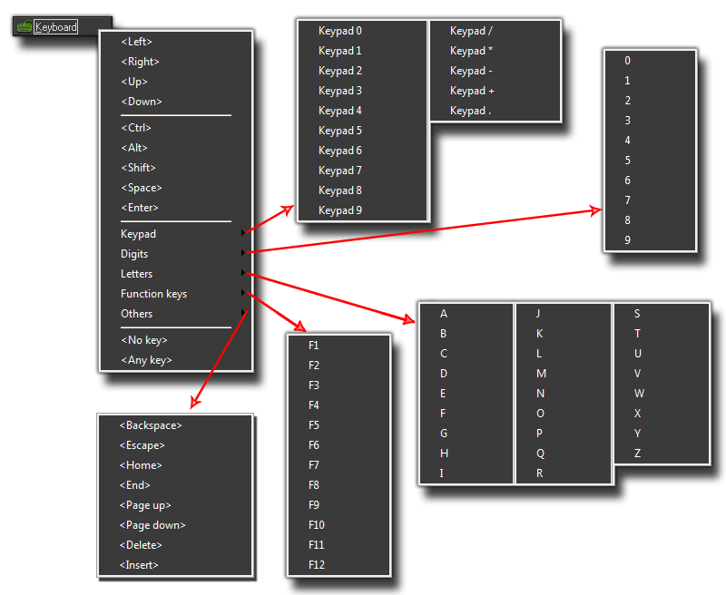

The
Keyboard Events
Obviously when creating a game, letting the player control the
different aspects is very important. To that end GameMaker:
Studio provides you with a very comprehensive list of keyboard
sub events that can be used in any of the three main
keyboard events. As these are all the same for each of the three
events they will all be covered together in this section of the
manual.
Before looking at the sub events, let's look at the three keyboard
events themselves:
As you can see, each of these events does a very different thing
and knowing the distinction between them can help you solve many a
problem or do things in your game in a much more efficient way. It
should be noted that keyboard events are actually triggered in
all active instances in a room whenever a key is pressed,
but only those that have an event defined for that particular key
will respond and you can create multiple keyboard events in any
object and the instances of that object will respond to all of them
while the game is running.
When you add any keyboard event to an object, you will be presented
with the keyboard sub event menu where you can specify the key you
are to be checking for: 
Now, most of them are fairly obvious, but let's just go through the
sections briefly - at the top we have the arrow keys, followed by
the most used modifier keys, then the rest of the keyboard (split
into sub sections as you can see) and finally two very special sub
events, No Key and Any Key. As their names imply,
these are sub events that check for when no key is pressed
or for when any key is pressed. Please note that the keys on
the numeric keypad only produce the corresponding events when
<NumLock> is pressed.